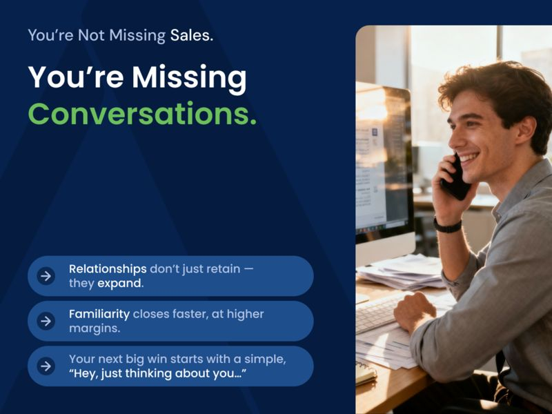
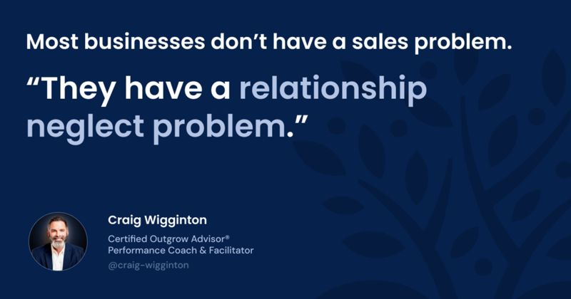
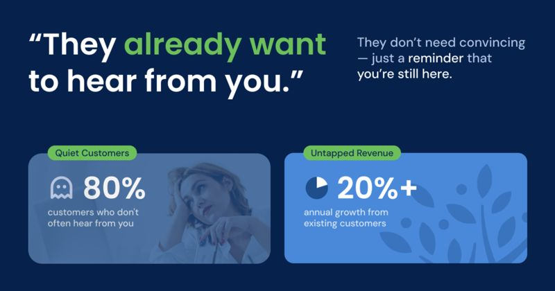

What Are Proactive Calls, DYKs, rDYKs, and Pivots? (How Outgrow Changes Sales Behaviors)
Discover the 4 habits that change sales behaviors and drive growth. See how Outgrow turns daily actions into lasting momentum and results.
ReadProactive Communications

(Part 4 of the PERMA Series)
In our last article, we unpacked how engagement — not effort — is the secret to consistent sales growth. When your people are emotionally bought in and activated daily, you see more outreach, more momentum, and more wins.
But now we need to get even more specific. Because all the swings in the world won’t matter if they’re not directed toward the right people. That’s where a relational sales approach changes everything.
Here’s what I see again and again in growth-stalled organizations:
Your team is busy. Your team is competent.
It’s not that they don’t care. It’s that your company has unintentionally normalized a rhythm that only touches a small portion of your customer base and leaves the rest to fade into the background.
Let’s put some numbers to it.
In most B2B companies:
This is the relationship gap. And it’s costing you far more than you think.
And yet… the average account manager or seller-doer is “talking” to maybe 10% of your book of business.
That means 90% of your customer relationships are underdeveloped, under-touched, and under-leveraged.
And when relationships sit idle, they degrade. Slowly. Quietly. Until you realize that someone you considered “loyal” just awarded a project to someone else… simply because that someone else stayed connected.
Worse still? Internally, your people aren’t sharing relationship signals across functions, because they’re working in silos.
How many opportunities has your ops or admin team heard on a call… and then let drift into nothingness?
How many new customer needs were spotted by a project manager… but never made it back to sales?
How many referrals sat unasked because “that’s not my department”?
Because just like engagement and emotion, you have to choreograph relationships, or they’ll default to chaos, inconsistency, and missed opportunity.
Now, let’s consider what it looks like when a business actually builds sales and service around relationships — not just transactions — and how that shift unlocks exponential growth without adding headcount.
Most businesses think they have a sales problem.
In reality, they have a relationship neglect problem.
Because if you’re like most SMBs, your team isn’t short on customers… they’re short on connection.

And when you shift your company culture to prioritize relationship-building over transaction-chasing, something remarkable happens:
Your existing customers start buying more.
Your internal teams start collaborating more.
Your referral pipeline opens up.
And your sales become more predictable — and less stressful.
Let’s zoom in.
Imagine a company where:
This is what a relationship-first business development culture looks like.
It’s built on familiarity, trust, and intentional reconnection.
Here’s the kicker: you don’t need more cold leads.
You need more conversations with people who already trust you.
Why?
Because choreographing proactive calls to the 80-90% of customers who love you (but never call you) has massive built-in advantages:
But let’s be clear: this doesn’t happen by accident.
It happens when you intentionally build a system that:
That’s where most companies fall short. They treat relationship-building like a personality trait (“Jeff’s good with people”) instead of a cultural practice that can be taught, tracked, and scaled.
When you change that mindset, everything changes.
Sales stops being isolated.
Ops stops being reactive.
Service stops being just order-takers.
And everyone becomes a connector — to value, to opportunity, and to each other.
Here’s a secret: in high-performing Outgrow companies, it’s not the most extroverted people driving growth… it’s the most intentional:
Relationships aren’t soft.
They’re strategic.
They’re the infrastructure that supports sustainable, predictable growth.
And Outgrow makes those relationships visible, actionable, and systematized — across every function in your business.
Most companies don’t lose deals because of bad products or poor service.
They lose deals because they fade from memory.
They drift. They go quiet. They fail to reappear when it matters most.
And that happens not because your people don’t care but because they don’t have a system for staying in relationship.
Here’s what the Outgrow process does differently: it turns relationships into a trackable, team-wide operating system.
Let’s break it down.
Every company has them: customers who are satisfied, maybe even loyal… but not actively engaged. They haven’t been called. Haven’t been asked. Haven’t heard from you unless there was an invoice or a problem.
That’s your Quiet 80%, and it’s the biggest opportunity you’re missing in your business.
Outgrow starts by helping you identify and prioritize these relationships:

We help you build a relational call list; one that doesn’t rely on cold leads, but reconnects with people who already trust you.
That alone starts to generate momentum.
Once those relationships are identified, Outgrow trains your team to reach out simply and naturally.
We’re not asking them to pitch.
We’re asking them to show up and be both human and helpful.
Here’s what a swing might sound like:
These aren’t cold calls. They’re warm reconnections. And when your whole team does 3–5 a day, the compound effect is massive.
Here’s where Outgrow really changes the game.
We don’t just focus on salespeople. We activate your entire customer-facing org from service, operations, and field teams, to show up more consistently, together.
During Monday Huddles, those actions get choreographed in a positive and visible way.
Your team starts to realize: “We’re growing this company together.”
And your customers? They feel the difference.
In a relationship-first culture, effort is the hero.
That means we celebrate:
Outgrow reinforces this weekly by showcasing not just wins, but effort.
This creates a feedback loop: people keep doing what gets recognized. So the relationship engine doesn’t just start. It sustains.
If you want to build a revenue machine, first build a relationship machine.
That’s what the Outgrow system delivers.
Your people reconnect.
Your customers respond.
Your pipeline fills, not from pressure, but from proximity.
Here’s the truth: you’re probably only one or two conversations away from your next six-figure opportunity.
It’s sitting inside your book of business. It’s known. It’s familiar. It’s trusted.
But if your team doesn’t reach out, it stays buried.
And if you don’t have a system that encourages and celebrates those connections, it stays buried forever.
And the key to unlocking it isn’t another campaign or sales push — it’s a relational sales approach that keeps your team consistently connected to the people who already trust you.
That’s the difference between companies that grow predictably… and companies that grow accidentally.
One’s built on a proactive, relationship-first culture.
The other’s built on reactive growth.
So what would it look like if your business was systematically reconnecting with the right people, every single day?
Let’s paint that picture:
That’s what a relationship operating system delivers.
It’s not just about being “friendly” or “good with people.”
It’s about building revenue through rhythm.
And it’s about showing your team how incredibly valuable they are — not just to you, but to the customers who already believe in them.
That’s the work. And it’s joyful work.
Because when your team starts hearing things like:
…they don’t need to be pushed to keep selling.
They want to.
And that’s what Outgrow installs. A culture where relationship-building is normalized, celebrated, and measurably tied to growth.
You’re not reaching out to strangers. You’re reconnecting with people who already want to hear from you. They just need a reason, and a rhythm.
We’ll talk about your current customer touchpoints, the hidden relationships you’re likely missing, and how Outgrow can help you activate all of it with structure, speed, and simplicity.
Because your next big win?
It’s already out there. It’s just waiting for someone on your team to pick up the phone and say, “Hey, I was just thinking about you…”
This article is the fourth article in our PERMA series, where we explore how Positive Psychology principles fuel the Outgrow system to transform sales cultures and drive predictable growth. Explore the full series:
Keep reading
Discover the 4 habits that change sales behaviors and drive growth. See how Outgrow turns daily actions into lasting momentum and results.
ReadWhen CEOs step back, belief fades. Learn how shifting from CEO to Chief Belief Officer keeps culture, managers, and growth systems energized.
ReadWhy accountability fails when it shows up too late — and how manager accountability, rhythm, and weekly conversation create predictable performance.
Read